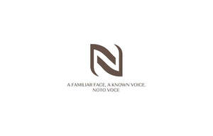

Trade Mark Journal No.2025/031 1 August 2025
UK00004237127 21 July 2025 (41)

- Class 41
- Publishing; Publishing of journals; Publishing of books; Newspaper publishing; Publishing of newspapers; Book publishing; Magazine publishing; Multimedia publishing; Publishing of stories; Multimedia publishing of journals; Publishing of newsletters; Publishing of electronic publications; Multimedia publishing of books; Music publishing; Publishing of music; Electronic publishing; Publishing of documents; Publishing of medical publications; Publishing services; Multimedia publishing of newspapers; Multimedia publishing of magazines; Publishing of web magazines; Publishing services for books; Publishing of books, magazines; Publishing of reviews; Publishing, reporting, and writing of texts; Multimedia publishing of electronic publications; Publishing of maps; Publishing services for books and magazines; Publishing of scientific papers; Publishing of instructional books; Publishing of books and reviews; Multimedia publishing of magazines, journals and newspapers; Song publishing; Publishing services (including electronic publishing services); Electronic desktop publishing; Publishing of electronic books and journals online; On-line publishing services; Publishing of electronic books and journals on-line; Book and review publishing; Electronic publishing services; Music publishing services; Publishing services for periodical and non-periodical publications, other than publicity texts; Online electronic publishing of books and periodicals; Multimedia publishing of printed matter; Publishing of educational material; Writing and publishing of texts, other than publicity texts; Publishing services, except printing; Publishing of printed matter; Publishing of musical works; Publishing of educational matter; Electronic publishing services for others; Online digital publishing services; Electronic text publishing services; Publication of books; Books (Publication of -); Publishing a newspaper for customers on the Internet; Publication of journals; Publishing of journals, books and handbooks in the field of medicine; Services for the publication of books; Publishing of magazines in electronic form on the Internet; Publishing by electronic means; Publication of educational books; Publishing and issuing scientific papers in relation to medical technology; Advisory services relating to publishing; Multimedia entertainment software publishing services; Desk top publishing; Publication of music books; Publication of newspapers; Publication of magazines; Magazines (Publication of -); Online publication of electronic books and journals; Publication of electronic books and journals online; Publishing of scripts for theatrical use; Publication of books relating to entertainment; Publication of electronic books and journals on-line; On-line publication of electronic books and journals; Newspaper publication; Publishing scientific papers in relation to medical technology; Publishing of scientific papers in relation to medical technology; Publication of periodicals; Services for the publication of magazines; Publication of audio books; Publication of books, magazines, almanacs and journals; Electronic online publication of periodicals and books; Publication of music; Publication and editing of printed matter; Publication of electronic magazines; Publication of textbooks; On-line publication of electronic books and journals (non-downloadable); Publication of periodicals and books in electronic form; Publication services; Publication of work manuals for business management; Publication of electronic books and periodicals on the Internet; Music publishing and music recording services; Publication of consumer magazines; Publication of text books; Publishing of printed matter relating to french wines; Online publication of electronic newspapers; Services for the publication of guide books; Publication of catalogs; Lending of books and other publications; Publication of books, reviews; Electronic publication; On-line publication of electronic books and journals [not downloadable]; Publication of educational texts; Electronic publication services; Publication of printed directories; Publication of year books; Publication of directories relating to travel; Publication of texts; Publication of multimedia material online; Publication of catalogues; Publication of scientific information journals; Services for the publication of newsletters; Recording of music; Music recording; Audio recording and production; Recording studios; Sound recording studios; Audio recording studio services; Sound recording studio services; Studio services (Recording -); Recording studio services; Audio recording services; Music recording studio services; Sound recording services; Audio and video recording services; Rehearsal [recording] studio services; Video recording services; Rental of sound and video recording apparatus; Audio recording and production services; Recording services; Production of audio recordings; Editing of audio recordings; Studio services for the recording of videos; Recording studio services for videos; Production of video and audio recordings; Production of sound and video recordings; Production of video recordings; Editing of video recordings; Hire of sound recording apparatus; Production of musical works in a recording studio; Recording studio services for television; Recording studio services for the production of sound bearing discs; Editing or recording of sounds and images; Recording studio services for films; Rental of acoustic recording equipment; Rental of apparatus for the recording of audio signals; Provision of video recording studio services; Production of sound recordings; Provision of video recording studio facilities; Rental of tape recording equipment; Rental of apparatus for the recording of video signals; Audio, film, video and television recording services; Production of sound and music recordings; Production of audio-visual recordings; Recording, film, video and television studio services; Production of audio master recordings; Sound recording and video entertainment services; Rental of recording studios; Studio services for the recording of cine-films; Rental of audio tapes bearing recorded music; Rental of sound and video recordings; Leasing of phonographic recordings; Production of video and/or sound recordings; Production of audiovisual recordings; Production of educational sound and video recordings; Rental of records or recorded magnetic audio tapes for language training; Rental of phonographic and music recordings; Hire of recording studios; Rental of audio recordings; Provision of recording studio services; Production of musical recordings; Provision of recording studio facilities; Recording studio facilities (Provision of -); Studio facilities (Provision of recording -); Studio recording facilities (Provision of -); Rental of video recordings; Record mastering; Hire of video recordings; Rental of camcorders; Rental of projectors; Rental of videotapes; Rental of jukeboxes; Book rental; Film rental; Rental of films; Rental of cameras; Rental of artwork; Rental of radios.
NOTO VOCE LTD